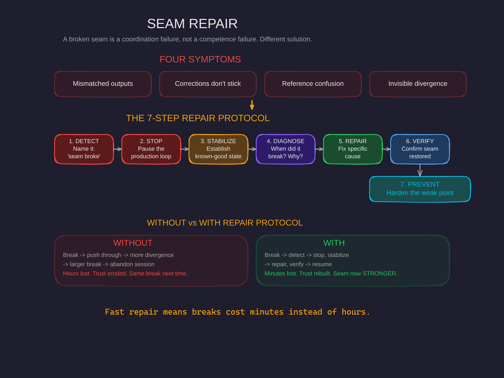

Seam Repair: What to Do When Alignment Breaks
You can't prevent every break in coordination. But you can recover from any of them — if you have a protocol instead of a panic response.

The Break You Don't See Coming
You're deep in a complex collaboration. Context is rich, mission is clear, coordination is flowing. Then something shifts. The outputs stop matching what you need. Your corrections don't stick. You're saying the same thing three different ways and getting the same wrong result.
First instinct: frustration. "Why doesn't it get this?"
Second instinct: repetition. Say the same thing louder.
Third instinct — if you're lucky: recognition. The seam broke. This isn't a competence problem. It's a coordination failure at the boundary between two contexts.
That recognition changes everything. Because competence problems and coordination problems have completely different solutions. And most people — most teams, most AI systems — never make the distinction.
Anatomy of a Broken Seam
A seam is the joining line between two contexts. Your understanding and your AI's understanding. Your team's plan and another team's plan. Your current session's knowledge and the state of the world.
When the seam holds, coordination flows. When it breaks, you get four symptoms:
1. Mismatched Outputs
What comes back doesn't serve what you asked for. Not wrong in general — wrong for your context. The AI writes perfectly good code that solves the wrong problem. The team delivers a feature that doesn't integrate.
2. Corrections That Don't Stick
You say "not like that, like this" and the next output is still like that. The correction didn't cross the seam. It bounced off.
3. Reference Confusion
You're using the same terms for different things. Or different terms for the same things. The vocabulary has drifted without anyone noticing.
4. Invisible Divergence
The worst one. The contexts drifted apart gradually, with each small mismatch building on the last. By the time symptoms appear, the gap is significant. Several exchanges of increasing friction before you realize the seam — not the people — is the problem.
A broken seam isn't a competence failure. It's a coordination failure at the boundary. Different problem, different solution.
The Seven-Step Repair Protocol
After several seam breaks and several failed repairs, here's what actually works:
1. DETECT
Recognize that this is a seam break, not a "try harder" situation. The symptoms are: persistent mismatch, corrections that don't stick, mutual confusion. Name it out loud: "I think we've lost alignment."
2. STOP
Don't keep generating broken outputs. Pause the production loop. You don't fix a machine while it's running. Every output produced on a broken seam is garbage that compounds the problem.
3. STABILIZE
Before diagnosing, establish a known-good state. "Here's what we're trying to accomplish. Here's what we've done so far. Here's what I need next." Stabilization creates the ground from which repair can proceed.
4. DIAGNOSE
When did the seam break? What caused it? Usually one of four things: context overload (too much state, key information faded), ambiguous handoff (unclear who owns what), missed signal (implicit communication that didn't land), or assumption divergence (building on different unstated premises).
5. REPAIR
Address the specific cause. Not a generic "let's get realigned" — the specific fix for the specific break. Reload the lost context. Clarify the ambiguity. Surface the divergent assumption.
6. VERIFY
Check that the seam is actually restored. "Before we continue — the goal is X, and we're approaching it by Y. Confirm?" Wait for substantive confirmation, not just "yes." If the confirmation reveals remaining misalignment, repair is incomplete.
7. PREVENT
What would have caught this earlier? Add to your check-in protocol? Improve signal clarity? The break just taught you about your seam's weak point. Harden it.
Why Repair Beats Prevention
Investing in repair matters more than investing in prevention.
You can't prevent all seam breaks. Contexts are complex. Communication is lossy. Attention drifts. Assumptions diverge silently. If your entire strategy is prevention, you have no strategy for the inevitable break.
Without a Repair Protocol
Break happens. Push through. More divergence. Larger break. Eventually abandon the session, the project, the collaboration. Hours lost. Trust eroded. Same weak point breaks again next time.
With a Repair Protocol
Break happens. Detect quickly. Stop, stabilize. Repair, verify. Resume with a hardened seam. Minutes lost. Trust rebuilt. The seam is now stronger at its former weak point.
Fast repair means breaks cost minutes instead of hours. Trust rebuilds instead of eroding. The seam gets stronger at exactly the places it used to fail. That's antifragility — not preventing damage but growing from it.
What This Looks Like in Practice
Consider a real scenario: You're 30 exchanges deep with an AI system. Outputs have stopped matching your needs. You say "remember, we're doing X" but results remain Y-shaped.
Without the protocol: Escalating frustration. Repeating yourself with different wording. Eventually starting over from scratch — losing 30 exchanges of context.
With the protocol:
- Detect: "We've lost alignment — outputs don't match my context."
- Stop: "Let's pause generating and re-establish."
- Stabilize: "Here's the mission. Here's what we've built. Here's what I need."
- Diagnose: Context overload — too many exchanges, key context faded.
- Repair: Reload key context explicitly. Simplify working set.
- Verify: "The priority is X, approach is Y. Confirm?" Substantive response confirms understanding.
- Prevent: Check-in every 10 exchanges to restate key context.
Five minutes. Session saved. Seam hardened for next time.
The Pre-Emptive Seam Check
Before starting any collaboration that's had previous breaks:
- What broke last time? Review the cause.
- What was the repair? Recall the fix.
- What prevention was added? Remember the hardening.
- Is prevention active now? Verify it's in place.
Starting with seam health in mind reduces break frequency. Not to zero — never to zero — but enough that repair becomes the exception rather than the default.
See the Full Picture
Seam Repair connects to HALO (the human-AI linked operations framework where seams are the core concept), Mission Control (whose regular check-ins catch invisible divergence before it becomes a break), and the full architecture we use with clients.
If your AI systems keep losing context, your team handoffs keep corrupting, or your collaborations keep drifting into friction — you have a seam problem, not a people problem. We can map your seams, find the weak points, and install the repair protocols.